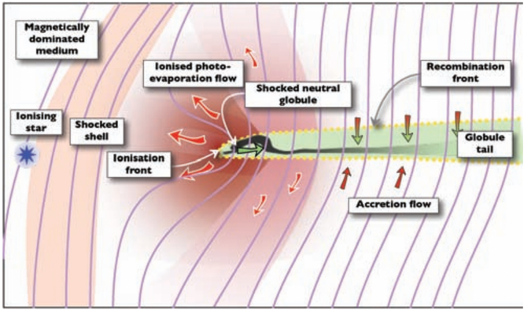
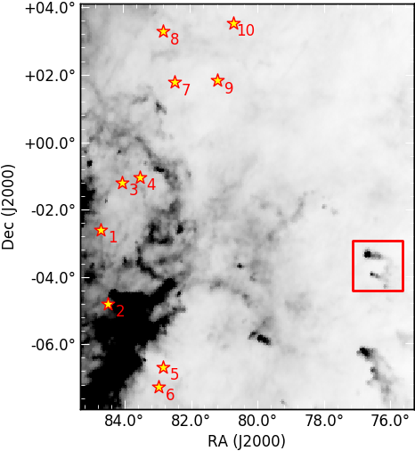
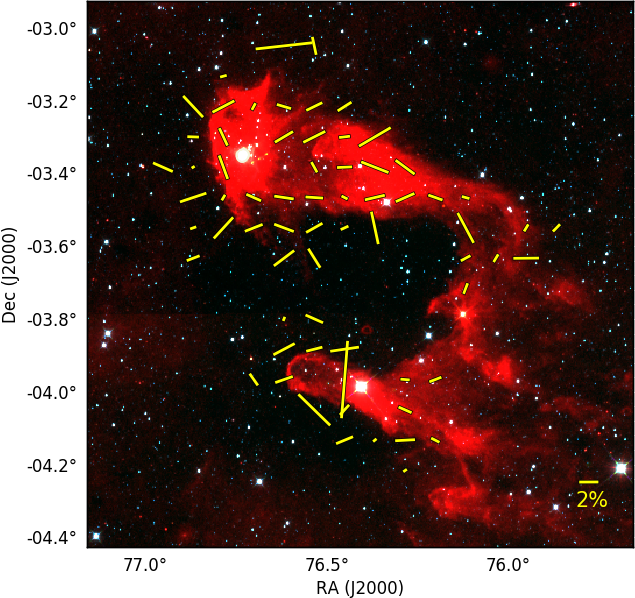

Imploding Cometary Clouds: An Astronomer's Perspective
The interstellar molecular clouds are the high-density regions between the stars having elements in the molecular phase. These clouds usually come up with different structures based on the influence of nearby massive ionizing stars. Also, these stars can either hinder or trigger the star formation in the molecular clouds. The ambient magnetic field towards these clouds also found to regulate the star formation and structural evolution. In our work we study the magnetic field structure (projected on the plane -of-sky) of a molecular cloud shaped as a comet in the Orion region of the sky. We found the evidence that the magnetic field is dragged away by the pressure of the nearby massive ionizing source and shaping the curvy structure of the cloud.
Introduction
The region in between the stars is called the interstellar medium which is mainly composed of clouds of gas and dust. In interstellar clouds, starlight cannot pass through the highly dense area, which is why hydrogen can preserve its molecular state (H2). Also, other chemical elements, for example, carbon monoxide (CO), ammonia (NH3), water (H2O), etc. exist in the form of molecules. Therefore, high-density interstellar clouds are called molecular clouds. Typically, the molecular clouds have an average density of 100-300 molecules cm-3. These molecular clouds are considered to be the potential sites of birth of young stellar objects (YSOs), through collapse under the influence of gravitational force, which tends to drive the cloud material inward towards the center of gravity.
Massive OB stars (Mass >= 8Msun, with spectral types O and B) are considered to affect their surrounding molecular clouds significantly. The energetic photons emitted from these massive stars promptly ionize the immediate vicinities, resulting in a shock which eventually results in non-uniform cloud structures, such as Bright-Rimmed Clouds (BRCs), Cometary Globules (CGs), the Elephant’s Trunk Nebula, etc (examples are shown in Figure 1) based on their appearances. BRCs consist of a compact, dusty edge similar to a narrow, bright-rimmed head along with a faint elongated tail-like structure extending from the head, which is towards the side of the nearby massive OB stars. Many of the BRCs display more collimated structure, looking like a comet, which are named as CGs. Also, we can see elongated structures resembling an elephant’s head and trunk, which are designated as Elephant’s Trunk Nebula. Despite their structures, these clouds are invariably aligned with their long axes almost parallel to the direction of the ionizing sources, for example, nearby OB stars.
Figure 1: (Left) Bright-rimmed cloud named SFO 18, Credit: Jim Thommes, (Middle) Cometary globule named CG 12, Credit: Sebastian Volmer, (Right) Elephant’s Trunck nebula named IC 1396A, Credit: Spitzer space telescope.
The shocks taking place in these cloud structures can trigger the star formation, by possibly compressing the inner dense cores and eventually tend to gravitational collapse. The evolution of these elongated molecular clouds and the star formation in them are found to be regulated by the orientation and strength of the ambient magnetic fields. An initially perpendicular magnetic field of weak and medium strengths is dragged and made to orient following the cloud structure during the dynamical evolution of the globule by the photoionizing radiation from the nearby ionizing source (see Figure 2). However, a strong perpendicular field remains in its initial alignment. Therefore, an investigation of the magnetic field geometry surrounding the molecular clouds is important to study the structures and the dynamics of the globules. Polarimetry (a tool to measure the polarization of the electromagnetic wave, e.g., starlight) is a great tool that is widely used to investigate the magnetic field structure projected on the plane-of-sky (BPOS) around the molecular clouds.

Figure 2: Illustration of a photoevaporating magnetized molecular cloud. The purple lines are the magnetic field lines (with an orientation of ∼80◦ to the direction of ionizing photons). The molecular cloud is shown in green. The ionized gas is also presented in red. Credit: Henney et al. (2009).
The source studied in this work
We focused on a CG named L1616, that resides at an angular distance of about 8◦ west of the Orion OB1 associations, which is a group of massive OB stars at the Orion constellation. It shows evidence of ongoing star formation activity. An older population towards the north–eastern edge of the cloud (directed towards the Ori OB1 association) and a younger population towards the head region has been noticed, which means a trend of small-scale sequential star formation is present towards L1616. In Figure 3, we show the locations of L1616 and the nearby massive OB stars.

Figure 3: Positions of the bright Orion stars near L1616 plotted over the Planck 10◦ × 12◦ 857 GHz image. Area of our study of L1616 is indicated by a red colored box of size 1.5◦ × 1.5◦. The x and y axes show the right ascension (RA) and declination (Dec) of this region, respectively, which are used to mark the position of any object in the equitorial coordinate system. Details can be found here. Image credit: Saha et al. (2022).

Figure 4: The optical polarization vectors (yellow lines) plotted over the color-composite image using the Wide-field Infrared Survey Explorer (WISE) 3.5 (blue), 4.6 (green), and 12 (red) micron images of 1.5◦ × 1.5◦ size. The reference vector with 2% polarization is also shown. The x and y axes show the right ascension (RA) and declination (Dec) of this region, respectively. Image credit: Saha et al. (2022).
Results and Discussion
In order to study the BPOS towards L1616, we carried out optical polarimetric observations of this cloud using ARIES IMaging POLarimeter (AIMPOL) attached with 104 cm Sampurnanand Telescope, located at Aryabhatta Research Institute of observational sciencES (ARIES), India (see this link for details). In Figure 4, we show our optical polarimetric results. The orientation of the yellow polarization vectors indicates the angle of BPOS from the celestial north (the point about which all the stars in the northern hemisphere are seen to revolve). A curvature in the BPOS can be noticed in the head region of L1616. Also, the polarization vectors are found to show the trend of being twisted along the curvy tail. Overall, the BPOS is found to be more chaotic in the head region, which might be a result of the disintegration of cloud material by the energy input from the associated young stars. The presence of the massive OB stars can also impact the BPOS. From our results we conclude that possibly the ambient BPOS had an initial alignment perpendicular to the major axis of L1616. This alignment might be dragged away from the source of ionization following the structure of the globule, resulting in the twist of BPOS in the head area of the globule.
We have also made an attempt to investigate the pressure and the extent of the impact of the massive stars on L1616. The pressure exerted by epsilon Ori (the most massive star among the others in the Orion OB1 association) is estimated to be the highest, therefore epsilon Ori seems to be the main source to influence L1616. Also, the proper motion (motion of the objects projected on the sky plane) of the associated YSOs with respect to epsilon Ori shows evidence that most of them are moving away from the direction of epsilon Ori (main ionizing source). Based on the assumption that the motion of the YSOs follow the motion of the parental cloud, we can say that the cloud L1616 is currently being pushed away by the impact of epsilon Ori.
This work has been published in the Monthly Notices of the Royal Astronomical Society.
Acknowledgments
The authors sincerely thank the reviewer, Dr. Davide Gandolfi, for his constructive remarks which significantly improved the manuscript. The authors acknowledge all the supporting staff at ARIES, Nainital, who made the polarimetric observations possible. The authors also thank the CosmicVarta team for showing interest in this work and invitation to write about it.
Original paper: Magnetic fields and young stellar objects in cometary cloud L1616
First Author: Piyali Saha
Co-authors: Archana Soam, Tapas Baug, Maheswar Gopinathan, Soumen Mondal and Tuhin Ghosh
First author’s Institution: Satyendra Nath Bose National Centre for Basic Sciences (SNBNCBS), Salt Lake, Kolkata 700 106, India (former) National Astronomical Observatory of Japan (NAOJ), Mitaka, Tokyo 181 8588, Japan (current)